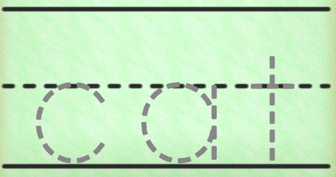
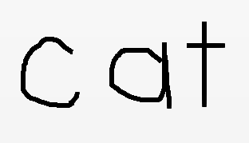

The Tin Can API allows us to do a lot of things that we couldn't do before.
Could you use SCORM to track a painting class? No way.
What about a simple handwriting exercise? Nope. But with Tin Can, you can.
Trace a word in this sample activity. A Tin Can statement is created out of your drawing. The experience is stored in Watershed.
Use a Mobile device on the 'Draw' link below to get the best drawing experience in Watershed (or use the field to email a link to your phone).
Start DrawingThe really cool thing is that on the reporting side of Tin Can Draw, the experience information that's stored in Watershed can be used to display your exact drawing.
A teacher could use this to see how students progress with their handwriting abilities and quickly see who needs extra practice.